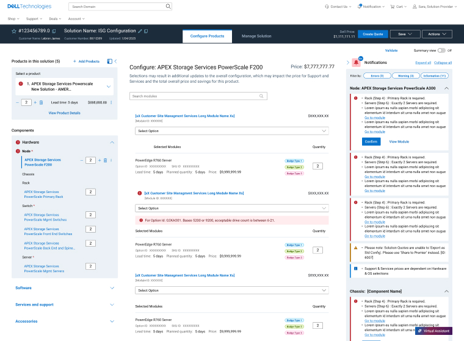
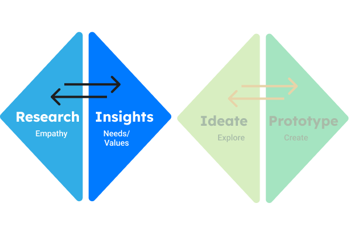

Dell Technologies: Restoring Trust in a Mission-Critical Sales System
Role
Lead Product Designer
Timeline
8 Months
Deliverables
Solution Dashboard, AI Guided Intelligent Product Configurator
Summary
Dell sales agents configure complex IT infrastructure under tight deadlines, where errors directly impact revenue and customer trust. Over time, the legacy sales ecosystem became fragmented, dense, and reactive — eroding confidence and stalling CSAT at 72%. I led the end-to-end redesign of the configuration experience, reframing the problem from “improving usability” to restoring trust and confidence under time constraints. The result was a unified configuration workspace that reduced cognitive load, minimized errors, and improved sales efficiency.

The Next-Gen IT Product Configurator
Unified Product Configurator with AI Collaboration Assistant
18% Faster
Time spent configuring complex servers soluitions decrease across IT infrastructure
Restored Trust
11% increase in CSAT Score.
Trust was restored through improved
usability and reliability
The Problem: Erosion of Trust
Sales agents relied on fragmented legacy tools to configure complex solutions, forcing constant context switching and reactive error handling. In high-stakes environments, this friction eroded trust in the system’s ability to produce viable outcomes. As confidence declined, users turned to manual workarounds and personal validation, increasing inefficiency and risk. With CSAT stalled at 72%, it became clear the problem extended beyond usability to systemic trust.
Discovery: Understanding Confidence Under Pressure
Rather than auditing screens in isolation, I focused on how agents actually worked.
The issue wasn’t just only usability (the assumed problem).
It was confidence, due to:
-
Reactive Not Proactive Error Handling
Validation errors were surfaced late and required manual resolution, often taking 10–15 minutes per issue.
-
Data Paralysis
Information density was high, but actionable insight was dangerously low.
-
Fragmented Workflow
Agents switched across platforms to complete a single configuration, increasing risk of data loss and mental fatigue.
"I know how ot work-around the errors and get them fixed, because I’ve done it so many times. But for new sales users, the learning curve is steep."
— Dell Sales Partner, Fortune 500 Client

A Strategic Reframe:The Unified Solution
Originally, the initiative was positioned as a next-generation configurator redesign. Through research, the opportnity was reframed to: Design a unified, intelligent workspace that supports confident decision-making in complex, high-pressure work environments. This shifted the focus from interface cleanup to workflow orchestration, error prevention, and system transparency.
Unifed Product Configurator
A unified product configuration experience for all users when exploring, comparing, and configuring products and services, with proactive error prevention and intelligent guidance to support confident decision-making in complex sales environments.
Intelligent Automation
An AI-powered collaboration assistant that provides real-time, contextual guidance and automates routine tasks — reducing cognitive load, preventing errors before they occur, and enabling users to focus on strategic decision-making rather than manual configuration.

Real-World Impact
35%
Reduction in Configuration Errors
Reduction in technical sales support tickets related to configuration errors, using intelligent automation.
1.2M
Annual Savings
Estimated operational cost savings for early-adopter clients.
+11%
Increase in CSAT Score
Elimination of configuration-related complaints and improved user satisfaction.
Lessons Learned
Visualizing Complexity as Clarity
Managing enterprise infrastructure isn’t about hiding complexity, but organizing it. By shifting from manual validation to AI-guided intelligence, users can focus on intent rather than relying on technical sales teams.
The Value of Embedded Design
The three-month research phase proved that "designing for" is different than "designing with." Witnessing sales partners ticking time bomb of incompatibility issues provided insights into high-contrast needs that no survey could capture.
Incremental Evolution vs. Total Refactor
I discovered that enterprise sales tools operate within complex ecosystems—pricing engines, inventory systems, fulfillment logic—so front-end decisions must align tightly with backend constraints and data integrity.